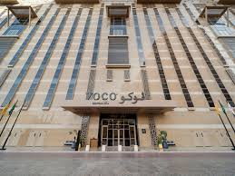

/// UMRAH PAKISTAN
Umrah Prices, Requirements & Process for Pakistani Pilgrims
What Umrah costs from Pakistan, what you need before applying, visa documents, and the whole Umrah process from Pakistan to Haram.

Umrah Package Price in Pakistan 2026
Current Umrah prices from Pakistan: Quad, Triple and Double sharing for an 11-day group from Pakistan with visa, flights and hotels included.
Read article →
Umrah from Pakistan: Complete Guide for 2026
A complete Umrah guide for Pakistani pilgrims: what Umrah is, current package prices, visa, documents, and how to book from anywhere in Pakistan.
Read article →
Umrah Process Step by Step for Pakistani Pilgrims
The whole Umrah process for Pakistanis: how to book, what happens with visa and flights, and how Umrah is performed in Makkah and Madinah.
Read article →
Umrah Requirements for Pakistani Citizens (2026)
Umrah requirements for Pakistani citizens in 2026: passport, visa, photos, CNIC, health records, mahram documents and children’s papers.
Read article →
What Do I Need Before Applying for Umrah from Pakistan?
A plain checklist of what you need in hand before you apply for Umrah from Pakistan — so the visa file is not delayed.
Read article →
How to Apply for Umrah from Pakistan (Group Package)
How to apply for Umrah from Pakistan in 2026 through a licensed group: package, documents, deposit, visa and departure from Pakistan.
Read article →
Umrah Visa for Pakistani Citizens: How It Works
How Umrah visa works for Pakistani passport holders, what papers are needed, and why group packages include visa processing in the price.
Read article →
Documents Required for Umrah from Pakistan
The documents required for Umrah from Pakistan — passport, CNIC, photos, children’s B-Form, mahram papers — so you can apply without delay.
Read article →
How to Perform Umrah: Simple Steps for First-Time Pakistanis
How to perform Umrah in simple steps: ihram, tawaf around the Kaaba, sa’i, and hair cutting — with a group guide for first-time Pakistanis.
Read article →
Umrah from Karachi, Lahore, Islamabad and Other Pakistani Cities
Umrah from cities across Pakistan with visa, return flights and hotels in one package. See 2026 group prices and the 15 September departure.
Read article →
Umrah Quad, Triple and Double Sharing Price in Pakistan
Umrah sharing prices in Pakistan: who should book Quad, Triple or Double, and why the package inclusions stay the same.
Read article →
First Time Umrah from Pakistan: What to Do
First time Umrah from Pakistan does not have to be confusing. Book a guided group, prepare documents, and learn the rites before you fly.
Read article →
Umrah Packing List for Pakistani Travellers
What to take for Umrah from Pakistan: a practical packing list for men, women and families on an 11-day group.
Read article →
Rabi ul Awal Umrah Package 2026 from Pakistan
Rabi ul Awal Umrah package 2026: group from Pakistan, 15 September (tentative), 11 days, sharing prices and full inclusions.
Read article →
Cheap Umrah Package in Pakistan: What You Actually Get
What “cheap Umrah package Pakistan” really means, which costs get left out, and how to compare a budget quote with a complete group price.
Read article →
What Is Included in an Umrah Package from Pakistan?
A clear list of what a complete Umrah package from Pakistan should include so you can compare quotes without missing visa or transport.
Read article →How to Choose an Umrah Package in Pakistan
A simple checklist for choosing an Umrah package in Pakistan: days, hotels, visa, sharing and who answers WhatsApp after you pay.
Read article →
How Many Days for Umrah from Pakistan?
How many days you need for Umrah from Pakistan: why an 11-day group with equal nights in Makkah and Madinah suits first-time families.
Read article →
Best Time for Umrah from Pakistan
When to go for Umrah from Pakistan: heat, crowds, Ramadan, school holidays, and why a fixed Rabi ul Awal group date is easier for families.
Read article →
Umrah vs Hajj from Pakistan: What Is the Difference?
Umrah vs Hajj from Pakistan in plain words: timing, days, cost, visa and why most first-time families start with Umrah.
Read article →
Umrah for Elderly from Pakistan: Pace, Rooms and Support
How to plan Umrah with parents from Pakistan: hotel shuttle, room type, medical insurance and a group that does not rush elders.
Read article →Umrah with Children from Pakistan
How Pakistani families take children for Umrah: documents, snacks, sharing type, and an 11-day pace that does not exhaust kids or parents.
Read article →
Passport Validity for Umrah from Pakistan
How long your passport should be valid for Umrah from Pakistan, when to renew, and why CNIC cannot replace a passport.
Read article →
Ihram Rules for Umrah: What Pakistani Pilgrims Must Know
Ihram for Umrah explained for Pakistani men and women: clothing, niyyah, miqat timing, and restrictions until tawaf and sa’i are done.
Read article →
Group Umrah vs Private Umrah from Pakistan
Group Umrah vs private Umrah from Pakistan: who should book a published group, and when a custom family package makes more sense.
Read article →